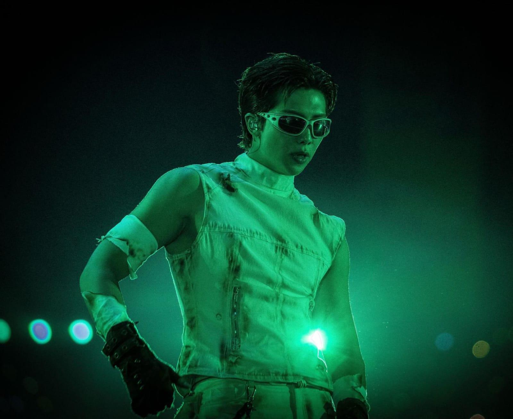
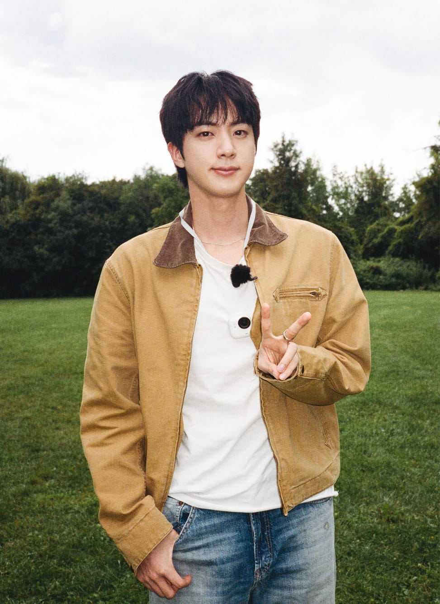
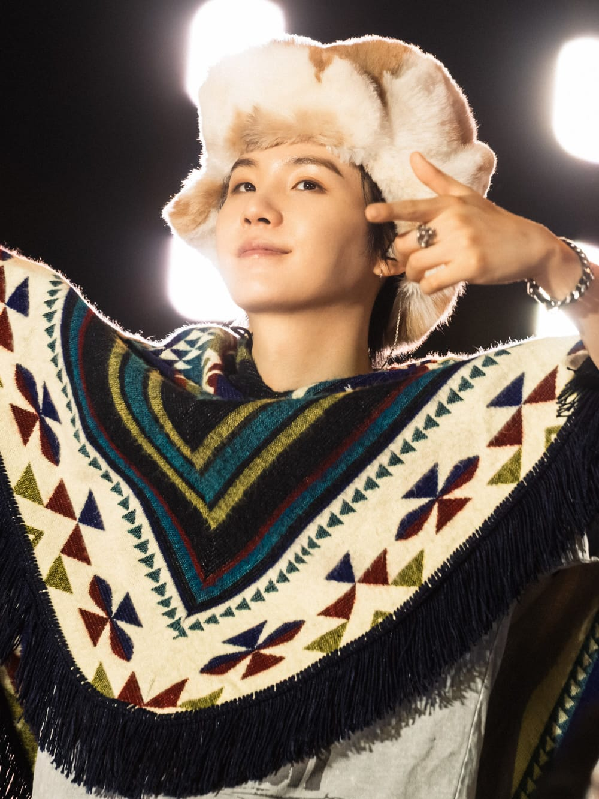
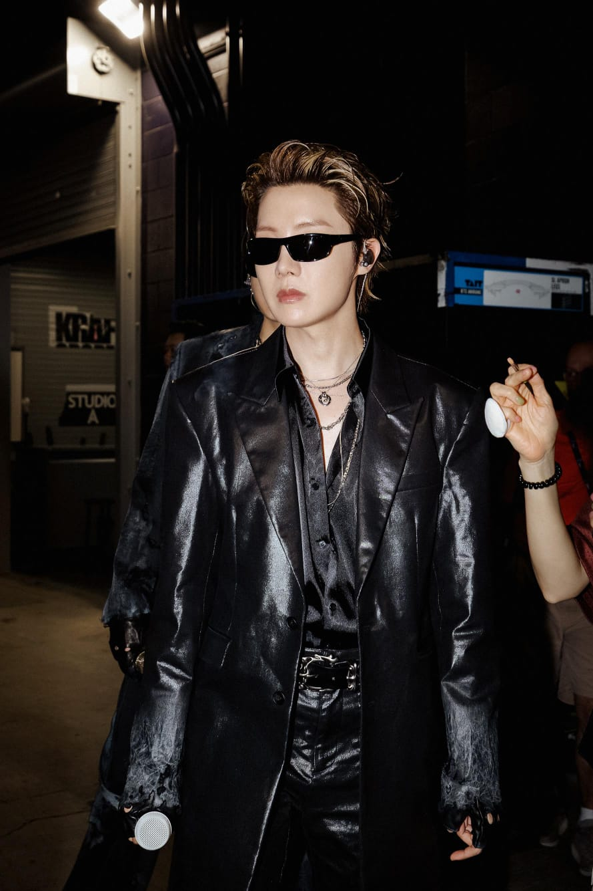
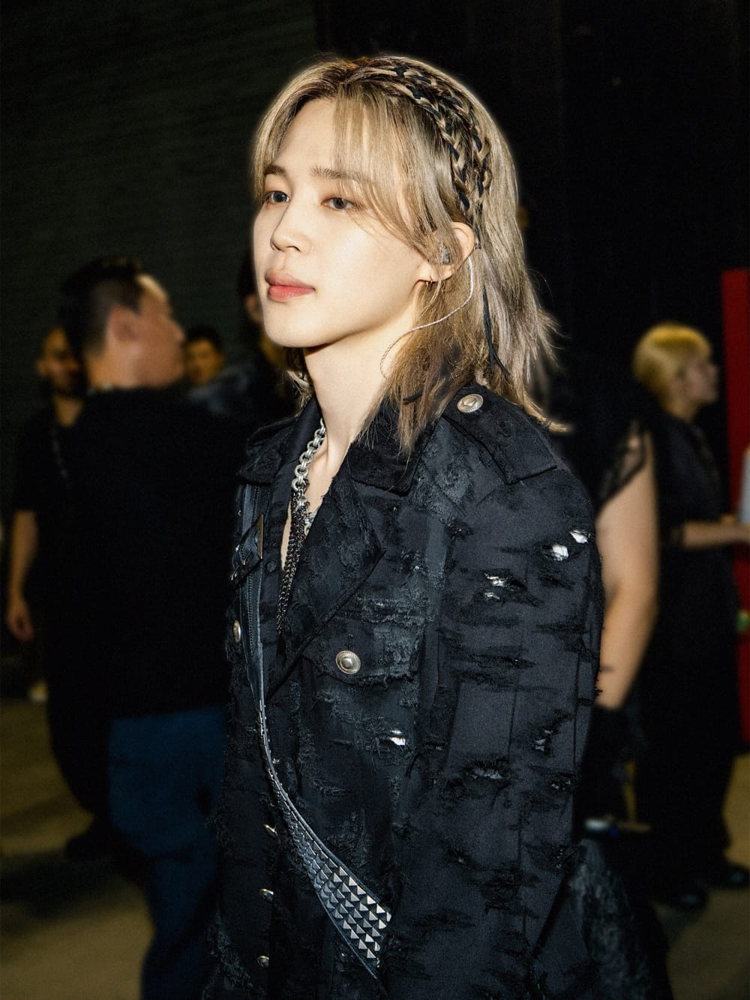
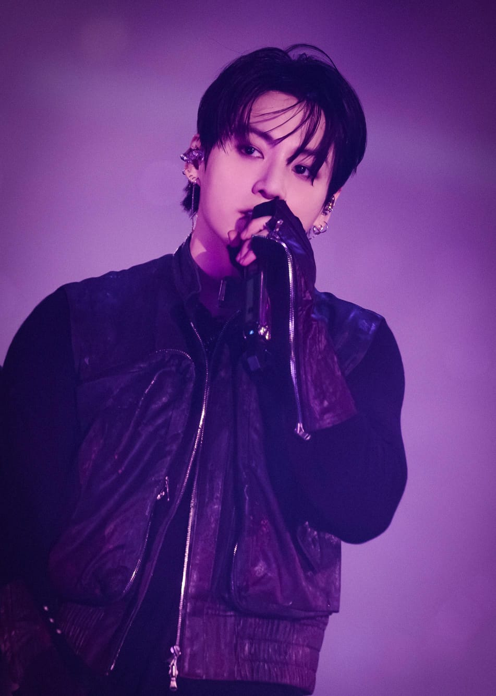

RM
Kim Nam-joon · líder
Bienvenido a un recorrido por el grupo surcoreano que convirtió sus canciones en un mensaje de crecimiento, esperanza y conexión para millones de personas.
Descubre su historiaBTS (Bangtan Sonyeondan) es un grupo surcoreano formado un grupo surcoreano de siete integrantes en Seúl bajo Big Hit Music (antes Big Hit Entertainment) y liderado por el productor Bang Si-hyuk. Debutaron oficialmente el 13 de junio de 2013 con el sencillo «No More Dream», pasando de ser aprendices con pocos recursos a convertirse en un fenómeno global del K-pop. Su música combina distintos géneros y aborda temas como la juventud, la identidad y el amor propio.

Kim Nam-joon · líder

Kim Seok-jin

Min Yoon-gi

Jung Ho-seok

Park Ji-min
Kim Tae-hyung

Jeon Jung-kook
Tres lanzamientos que muestran distintas etapas y sonidos de la trayectoria del grupo.
Una exploración emocional sobre el dolor de una despedida, con una mezcla de pop, hip-hop y sonidos contemporáneos.
Un álbum introspectivo que mira el camino recorrido por el grupo y reúne canciones sobre identidad y crecimiento.
Una colección que repasa distintas etapas de BTS e incluye canciones nuevas junto a temas representativos de su carrera.
Esta canción del BTS Festa 2020 es muy especial porque representa todo el camino difícil que recorrieron desde su debut hasta alcanzar el éxito mundial, recordándonos que el lazo entre BTS y ARMY los hace invencibles ("a prueba de balas") frente a cualquier obstáculo.
Ver video oficial en YouTube